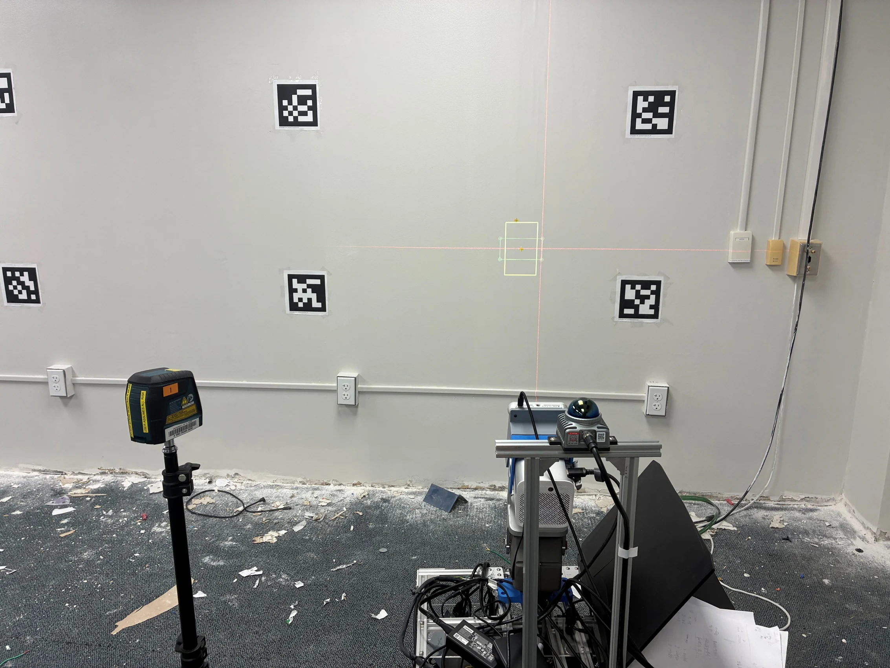
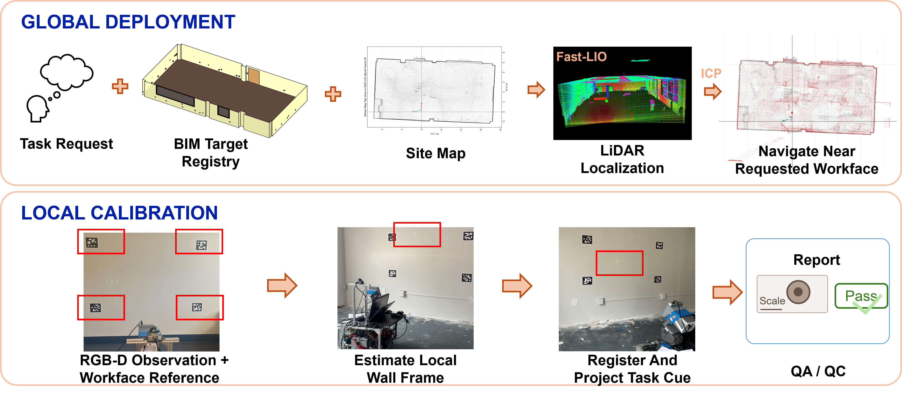
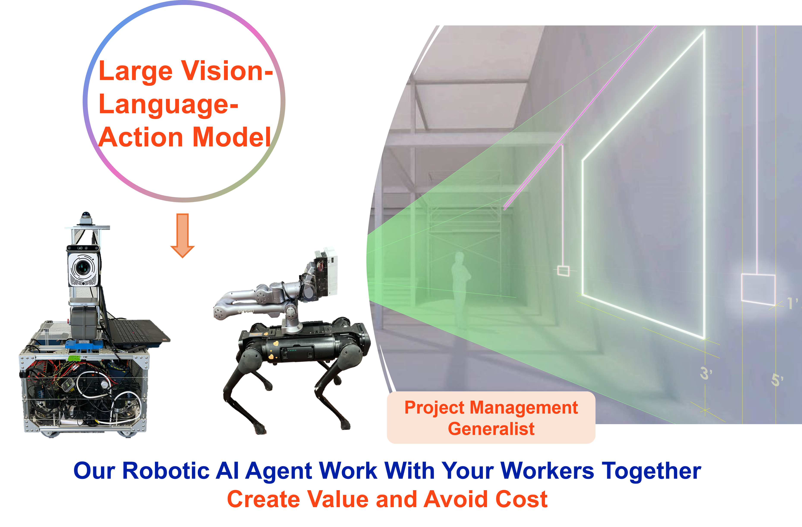

01 — The Problem & Rationale
The Problem
Construction Supervision Is Constrained by Time and Physical Presence.
Superintendents oversee multiple crews and work areas, while timely field guidance and quality checks still depend heavily on human availability.
Our Rationale
Extend the Reach of Superintendents with Agentic Robot Foremen.
Agentic robots can provide on-demand field guidance, assess work quality, and report findings to superintendents—while keeping human supervisors in control.
02 — Our Approach
From Task Understanding to Field Action and Verification
We investigate an agentic robotic framework that connects construction information, physical field assistance, and quality feedback.
Understand → Act → Verify → Report
Understand the Task
Interpret field requests and retrieve relevant information from BIM.
Act at the Workface
Navigate to the work area and project spatial guidance for workers.
Verify the Work
Assess visual evidence against design requirements and identify potential discrepancies.
Report to the Superintendent
Document field observations and flag issues for supervisory review.
Our mobile prototype implements this framework through global deployment and local workface calibration.


Platform Extension
03 — Prototype & Validation
Demonstrating Agentic Field Assistance Through Construction Layout
Our initial prototype integrates BIM-grounded task interpretation, robotic deployment, spatial projection, and visual quality assessment.


Five A — Design Objectives
- Acceptability
- Built to assist, not replace.
- Accessibility
- Guidance available at the workface.
- Affordability
- Potential for scalable on-demand assistance.
- Adaptability
- Designed to support existing field workflows.
- Agency
- Interprets field requests and supports on-site action.
- Fixed-View ProjectionMean radial placement error across 25 trials at 5 locations.
- 3.87 mm
- Mobile RepositioningMean projected-center error across 9 runs in 3 wall regions.
- 1.61 ± 0.77 mm
- Visual QA/QCExpected visual decisions matched in controlled tests.
- 15/15
These results demonstrate individual field-assistance capabilities under controlled experimental conditions.
04 — Our Vision
From Task-Specific Robots to Agentic Robot Foremen
We envision agentic robot foremen that support diverse construction tasks, assist field workers, monitor work quality, and report actionable information to superintendents.
Human-Led Supervision. Robot-Enabled Field Assistance.